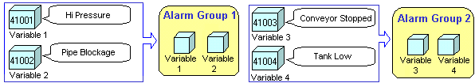
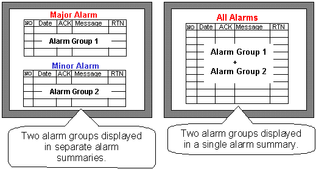
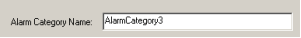
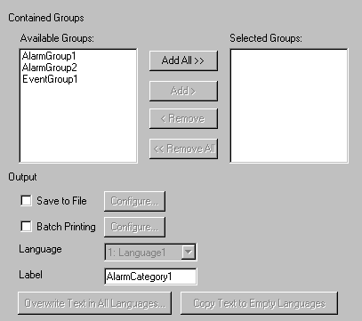
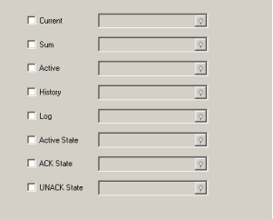
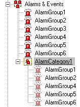
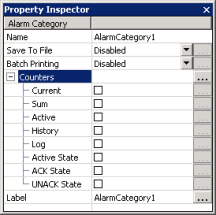
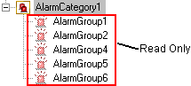

|
|
|
|
|
|
|
|
You can create multiple alarm and event groups and display each group in a separate summary. This enables users to classify their alarms and events.
For example, users can put urgent alarms into one alarm group and put ordinary alarms into another alarm group, and then display each alarm group in a different alarm summary.

Or users can classify alarms by machinery, location, and so on.
You can use an alarm category to display multiple alarm groups or event groups in a single summary. An alarm category is like a folder that helps you organize alarm and event groups. The alarm category enables you to display different combinations of groups in the summary, as shown in the following example.


You can use the alarm category to display both alarms groups and diagnostic alarm groups. See Section 16.3.2.2, Displaying Multiple Diagnostic Alarm Groups in an Alarm Summary.
You can output the contents of an alarm category into a .csv file. See Section 16.3.6, Outputting Alarms and Events to a .CSV file.
You can also print the contents of an alarm category. See Section 16.3.5, Printing Alarm and Event Messages.
Set up multiple alarm groups and assign variables to each alarm group. For more information, see Section 16.3.1.1, Creating Alarm and Event Groups.
Right-click the Alarms and Events node in the Project tab and select New Alarm and Event Category to display the Alarm Category Settings dialog box.
In the Alarm Category Settings dialog box, define the following alarm category settings.
Alarm Category Name

|
Alarm Category Name |
The alarm category's name. Whenever an alarm category is created, a default name is generated. When renaming an alarm category, ensure that its name is unique within the target, contains no more than 32 valid characters, and follows the naming conventions. For more information, see Appendix 9, Naming Conventions. |
General Tab

|
Available Groups |
Lists all the local alarm groups, event groups, alarm categories, and diagnostic alarm groups, that you can add to the alarm category. Add a group by selecting a group from the list and clicking the Add button. |
|
Selected Groups |
Lists the groups in the alarm category. Remove a group by selecting the group and clicking the Remove button. |
|
Save to File |
To output the alarms and events in the alarm category to a .csv file, select the Save to File check box and click the Configure button to specify the save properties. When you output alarms and events to the Secondary or Optional Drive in a .csv file format, select the check box and click Settings. For more information, see Section 16.3.6, Outputting Alarms and Events to a .csv File. |
|
Batch Printing |
To print the alarms and events, select the Batch Printing check box and click the Configure button to set the print properties. |
|
Language |
Available when multiple languages are set up in the Language node. Select the Label's language. You can set up a different label for each user language. For more information, see Section 20.2, Switching Languages. |
|
Label |
Defines the group's name that displays in the summary's group column. You can define a different label for each of the available languages. You can enter up to 32 characters for each group name. |
|
Overwrite Text in All Languages |
Available when multiple languages are set up in the Language node. Overwrites the text in all languages with the text defined in the Label. For more information, see Section 20.2, Switching Languages. |
|
Copy Text to Empty Languages |
Available when multiple languages are set up in the Language node. Copies the text defined in the Label to languages that do not have labels yet. For more information, see Section 20.2, Switching Languages. |
The following counters count the total number of alarms and events in all the associated alarm groups and event groups under the alarm and event category. The counters that pertain to state are not applicable to events and the value will always be 0 for events. The History and Log counters will indicate the count for both alarms and events.

|
Current |
Counts the number of active alarms in the selected category. |
|
Sum |
Provides the cumulative count of active alarms in the system. Select the Sum checkbox and define the variable to store the total count.
|
|
Active |
Counts the number of Active alarms, including acknowledged alarms that have not Returned to Normal (RTN). Select the Active check box and define the variable to store the total count. When the alarm behavior is Optional ACK, the Active alarm count is the same as the Current alarm count. When the alarm behavior is Mandatory ACK, the Active alarm count includes UNACK alarms. |
|
History |
Counts the number of Active alarms, Acknowledged alarms, and Returned to Normal (RTN) alarms, and historical events. Select the History check box and define the variable to store the total count. If the alarm behavior is Mandatory ACK, it also counts Unacknowledged alarms. |
|
Log |
Counts the number of alarm state changes in the log database and the number of event records. Select the Log check box and define the variable to store the count. |
|
Active State |
Counts the number of variables whose alarms are currently in Active State, RTN state, or ACK state. It does not count alarms in the UNACK state. Select the Active State checkbox and define the variable to store the count. |
|
ACK State |
Counts the number of variables whose alarms are currently in ACK state and still active. Select the ACK State checkbox and define the variable to store the count. |
|
UNACK State |
Counts the number of variables whose alarms are currently in UNACK state. Select the UNACK State checkbox and define the variable to store the count. |

Alarm groups support all the counters listed. Diagnostic alarm groups support Active, History, and Log counts only. These counts show the number of alarms that are currently available in active, history, and log alarm summary displays.
Once you have set up your configurations, click OK. The alarm category node is created with the selected alarm groups listed beneath.


You can set properties in the Property Inspector for the alarm category.

You can add up to 32 alarm categories in a single target.
You can add the alarm categories to other alarm categories.
The alarm groups listed beneath the alarm category are read only. If you wish to edit alarm groups, select individual alarm group nodes and edit their properties.

If you delete an alarm category, the alarm category will be deleted, but the alarm groups in the alarm category are not deleted.
Right-click the alarm category and select delete.
Vijeo Designer will ask the user to confirm if the alarm category must be deleted. Click Yes if you wish to continue deleting the alarm category.
Place a summary on the panel and double-click it to display the summary's settings.
In the General tab, click the Alarm and Event Group property, select the alarm category to link to the summary, and click OK.
The summary is now linked to the selected alarm category and will display the alarms and events belonging to it.